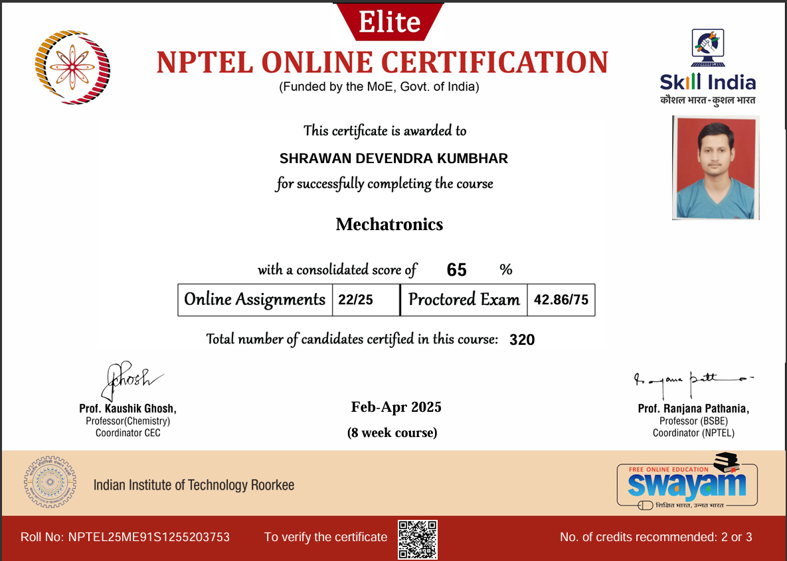

remote_theme: pages-themes/minimal@v0.2.0
plugins:
  - jekyll-remote-theme

title: Shrawan Kumbhar
show_downloads: false

description: >
  <div style="text-align: center;">
    
    <p style="margin-top: 10px;">Undergrad ENTC @ VIIT, Pune</p>
    <div style="display: flex; justify-content: center; gap: 15px; margin-top: 10px; margin-bottom: 20px;">
      <a href="https://github.com/shrw-11" target="_blank">
        
      </a>
      <a href="https://www.linkedin.com/in/shrawankumbhar/" target="_blank">
        
      </a>
      <a href="https://scholar.google.com/citations?user=4b2j4LwAAAAJ&hl=en" target="_blank">
        
      </a>
    </div>

    <!-- Container that pushes the footer down -->
    <div style="position: relative; min-height: 300px; width: 100%; max-width: 450px; margin: 0 auto 40px auto;">
      <style>
        @keyframes certFade {
          0%, 45% { opacity: 1; z-index: 2; }
          55%, 100% { opacity: 0; z-index: 1; }
        }
        .cert-slide {
          position: absolute;
          top: 0;
          left: 0;
          width: 100%;
          height: auto;
          border-radius: 10px;
          border: 1px solid #eee;
          box-shadow: 0 4px 10px rgba(0,0,0,0.1);
          background-color: white;
        }
        #slide-robocon { animation: certFade 6s infinite alternate; }
        #slide-nptel { animation: certFade 6s infinite alternate-reverse; }
      </style>
      
      <!-- Ensure filenames match exactly: robocon.png and nptel_mechatronics.png -->
      
      
    </div>
  </div>

google_scholar: https://scholar.google.com/citations?user=4b2j4LwAAAAJ&hl=en
github_username: shrw-11
linkedin_username: shrawankumbhar
